DRAGON BALL Z
Mtro. David Nieto Lopez
DRAGON BALL Z
- Dragon Ball es un manga escrito e ilustrado por Akira Toriyama, y publicado por primera vez en la revista Shonen Jump, de la editorial japonesa Shueisha, entre 1984 y 1995.
Su trama describe las aventuras de Goku, un guerrero saiyajin cuyo fin es proteger a la Tierra de otros seres que quieren conquistarla y exterminar a la humanidad. Conforme transcurre la trama conoce a otros personajes que le ayudan en este propósito. El nombre de la serie proviene de unas esferas mágicas que cuando son reunidas invocan a un dragón que concede deseos. En varias ocasiones resultan útiles tanto para Goku y sus amigos como para la humanidad, aunque también son constantemente procuradas por algunos seres para fines malignos.
El manga tuvo 519 capítulos impresos, recopilados en 42 volúmenes tankobon. Dos años después de su lanzamiento, Toei Animation estrenó una adaptación anime que abarcó aproximadamente la primera mitad de la obra. Una vez concluida su transmisión en 1989 por el canal Fuji Television en Japón, Toei estrenó una continuación titulada Dragon Ball Z, la cual incorporó el contenido restante del manga.2 Un tercer anime producido por el mismo estudio se estrenó en 1996. Denominado Dragon Ball GT, posee un argumento inédito en cuya redacción no participó Toriyama.4 La violencia y desnudez en varios segmentos de Dragon Ball provocaron que sus distribuidoras censuraran parte del contenido del manga y del anime en distintos países.

Pie de página
FREEZER
- Freezer es un ser que conquista planetas para venderlos por medio de una organizaciónNota 1 a la que pertenecen criaturas de varias razas. Entre estas se incluyen los saiyajin, seres con aspecto humano que poseen una considerable fuerza. Temeroso de que puedan convertirse en una amenaza para su dominio, Freezer decide destruir su hogar, el planeta Vegeta, con la intención de exterminarlos.15 Sólo unos cuantos saiyajin sobreviven a la masacre, entre ellos Vegeta, Nappa y los hermanos Raditz y Kakarotto. Decide dejarlos con vida para que continúen sirviéndole en sus planes conquistadores, y les miente sobre la causa del exterminio de su raza.16 Kakarotto, que aún es un bebé, es enviado a la Tierra en una nave espacial para que cuando crezca extermine a la humanidad y se apodere del planeta.
Al llegar a su destino, Kakarotto es hallado por un anciano llamado Son Gohan, que lo adopta como su nieto y lo llama Goku. Debido a un accidente, un día el bebé cae por un acantilado y se golpea la cabeza, lo cual le produce una amnesia que le hace olvidar algunos rasgos de su personalidad como saiyajin.17 Unos años después Goku conoce a Bulma, quien le revela la historia de las Dragon Balls, siete esferas mágicas que invocan al dragón Shenlong, capaz de concederle cualquier deseo a quien las reúna en su totalidad.18 El joven decide acompañar a Bulma en su búsqueda de dichos objetos y, en el proceso, conoce a otros personajes como Oolong, Yamcha y Puar, así como al villano Pilaf que también desea encontrar las Dragon Balls pero con el fin de conquistar el mundo. Para mejorar sus habilidades de combate y participar en un torneo de artes marciales denominado Tenkaichi Budokai, el protagonista entrena con Kame Sennin, un maestro que le enseña la técnica del Kame Hame Ha. Igualmente conoce a Krilin, alumno de este último, que acompaña en varias ocasiones al saiyajin en sus siguientes aventuras, y a Ten Shin Han.19
Conforme transcurre la serie, Goku se enfrenta a otros antagonistas como el ejército Red Ribbon,20 Tao Pai Pai21 y Piccolo Daimao,22 y continúa su entrenamiento con otros maestros como Karin23 y Kamisama, dios de la Tierra y creador de las Dragon Balls.24 Se casa con Chichi,25 con quien procrea primeramente a Gohan26 y luego a Goten.27 No es sino hasta la aparición de los otros guerreros saiyajin, y del propio Freezer, que Goku se entera de su pasado. En su afán por proteger a la humanidad se enfrenta en un inicio a los saiyajin restantes y a Freezer. Este mismo ideal le lleva a combatir luego a otros enemigos, entre los cuales sobresalen el androide Cell28 y la criatura Majin Boo.29 Es ayudado por otros personajes como Piccolo y Vegeta, con quienes mantuvo en algún momento una rivalidad efímera, o Trunks, y obtiene enseñanzas de seres espirituales como Kaio Sama, que le instruye con las técnicas Genkidama y Kaio Ken,30 y Kaio Shin del Este.31 Tiempo después se entera de que existen otros seres poderosos que rigen el universo, como Bills, el dios de la destrucción,32 así como de un nuevo tipo de Dragon Balls con mayor poder que las originales (las «Dragon Balls definitivas»), cuya localización le lleva a recorrer el espacio exterior junto con Trunks, su nieta Pan y el robot Giru.33 Esta aventura le lleva a enfrentarse a un nuevo enemigo, Baby,34 y a combatir a dragones perversos para salvar a la raza humana.35 Al final de la serie, debido a que las Dragon Balls originales acumulan una importante cantidad de energía negativa en su interior por el uso constante en la Tierra, Goku parte con Shenlong para mantener un equilibrio de energía en dichos objetos mágicos, y su cuerpo se desvanece junto con las legendarias Dragon Balls.
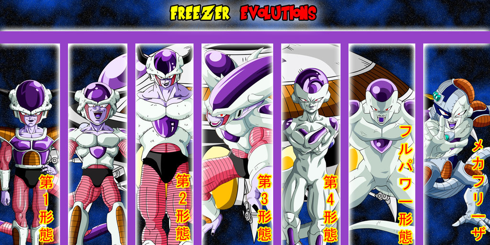
Pie de página
ASPECTOS DE LA SERIE
- Una parte importante del argumento de Dragon Ball ocurre en la Tierra , un planeta con similitudes al nuestro. Toriyama concibió el universo de la obra como una «gran esfera» dividida en dos sectores: el inferior, donde habitan todos los seres vivos («reino de los vivos»), y el superior que es donde se encuentra el «más allá» (??? Anoyo?), lugar al que arriban los personajes cuando mueren, así como hogar de algunos espíritus y deidades. En medio de estos dos sectores se encuentra el infierno (?? Jigoku?), al que van los villanos al fallecer. El reino de los vivos está separado en cuatro cuadrantes en dirección a los puntos cardinales, y cada cuadrante está gobernado por un ser divino llamado Kaio (?? Kaio?) que actúa como guardián de dicha región. Existen seres superiores a los Kaio, los Kaio Shin (??·??? Kaio Shin?), que supervisan las labores de los primeros y vigilan todo el universo. Estos últimos son considerados como «dioses de la creación».37 En contraparte, existen los «dioses de la destrucción» que tienen como objetivo exterminar la vida para garantizar un balance en el universo.38 En la serie existen una docena de universos; la Tierra se encuentra en el séptimo, ubicado en la región noreste del cosmos. Es gobernada por el dios Kamisama (?? Kami-sama?) —creador de las Dragon Balls terrestres—, que es supervisado por Kaio del Norte, que es vigilado a su vez por el Kaio Shin del Este.37
Otros planetas que poseen importancia para la trama son el Planeta Vegeta , de donde provienen los saiyajin —incluidos Goku y Vegeta—, guerreros con una considerable fuerza y notable habilidad para la lucha, y que Freezer destruyó; Namek , de donde proviene Kamisama, y en el cual existen otras Dragon Balls creadas por Saichoro, el gobernante;39 o el planeta pequeño donde habita Kaio del Norte, ubicado en el más allá.30 En la Tierra habitan seres con características idénticas a los humanos, que son significativamente más débiles que los saiyajin y otras razas extraterrestres, además de criaturas antropomorfas parlantes —por ejemplo Oolong y Puar— y dinosaurios. Aquí se encuentra la Torre de Karin , donde habita el maestro Karin y que se conecta con el Palacio de Kamisama , hogar del dios de la Tierra,23 al igual que la sede del Tenkaichi Budokai, torneo de artes marciales en donde participan los guerreros más fuertes del mundo. El anime Dragon Ball GT, cuyo argumento no fue escrito por Toriyama, se ambienta mayormente en el espacio exterior y en otros planetas que no aparecen en el material original.
Los principales objetos en la serie son las Dragon Balls, siete esferas de color anaranjado, cada una con un número distinto de estrellas rojas en su interior. Existen tres tipos diferentes: las terrestres, las del planeta Namek y las definitivas —que aparecen en Dragon Ball GT—. Todas son capaces de invocar a un dragón distinto, que posee tal poder mágico como para cumplir uno o más deseos al responsable de haber reunido las esferas. Si bien los acontecimientos originales tratan sobre la búsqueda de estos objetos, y a lo largo de la serie son usados para diferentes fines, conforme transcurre Dragon Ball la historia va centrándose en la lucha de los guerreros Z —Goku y sus amigos— contra otros seres que anhelan conquistar el planeta, destruirlo o exterminar a los saiyajin que sobrevivieron a la destrucción del planeta Vegeta. Un elemento central en la serie es el combate: además del enfrentamiento con el cuerpo, también es posible que los personajes desarrollen poderes y técnicas especiales. Algunas de las más importantes son el Kame Hame Ha, enseñada a Goku por Kame Sennin; el Kaio Ken , capaz de incrementar la energía —conocida como Ki—; y la Genkidama una esfera de energía con capacidad destructiva.19 Algunos personajes pueden recurrir a la transformación física para adquirir una mayor energía o velocidad, como es el caso de los saiyajin —que pueden llegar hasta cuatro niveles de transformación;40 Goku es capaz de alcanzar el nivel dios en La batalla de los dioses—, o de villanos como Freezer, Cell y Majin Boo. En otros casos, se puede utilizar la fusión física de dos personajes para combinar su energía y obtener más poder.

Pie de página
PERSONAJES PRINCIPALES
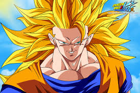
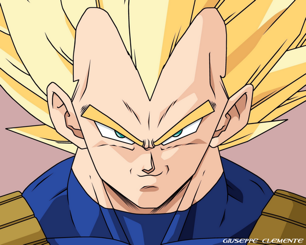
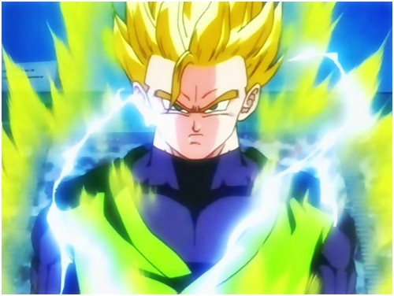
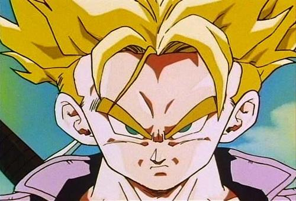
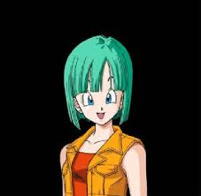
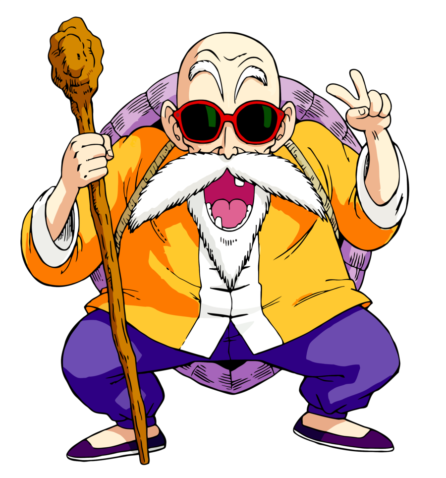
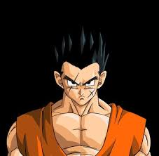
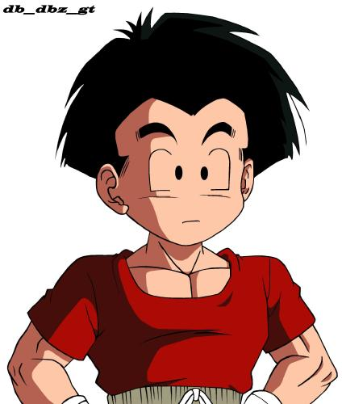
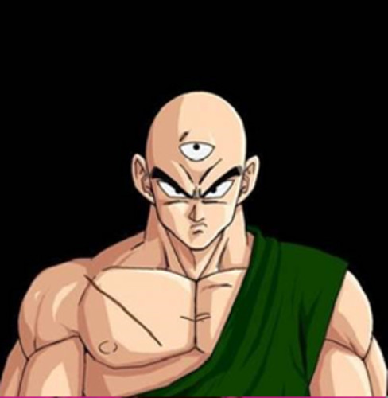
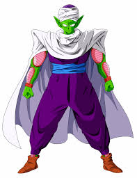
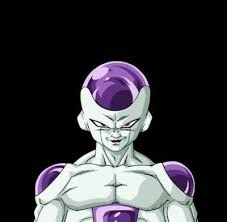
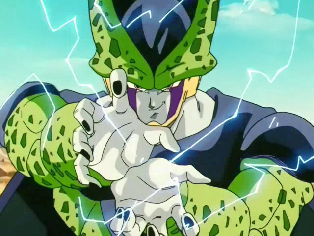
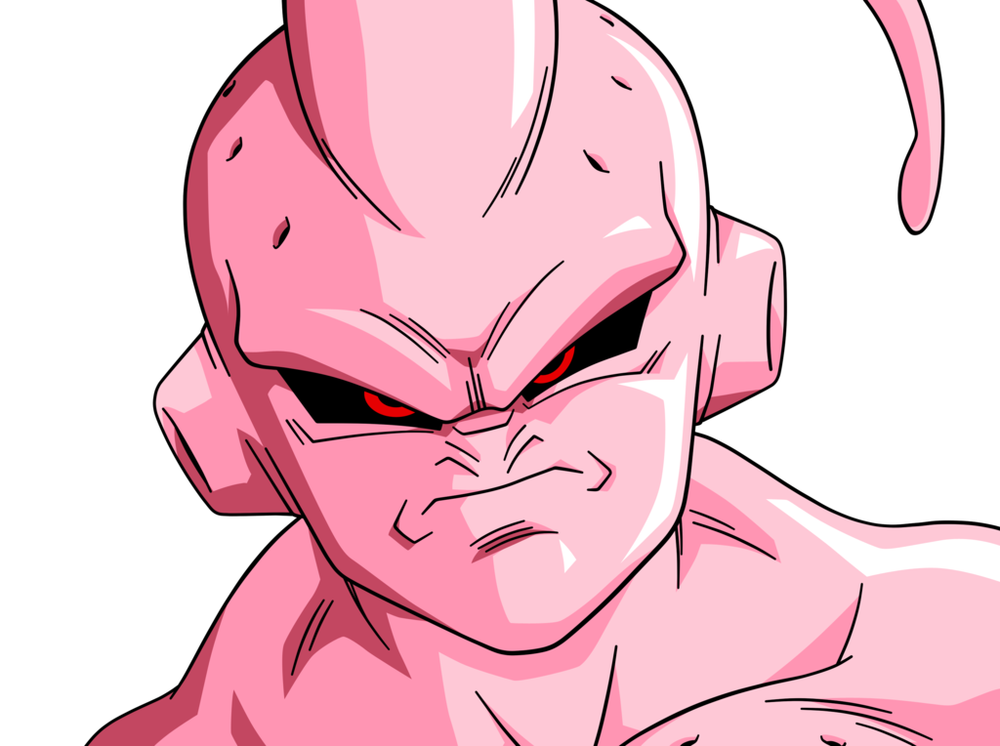
Pie de página
CAPITULOS